Contents
clear; clc; close all;
a)
load('constrainedLS.mat')
The original optimization problem can be stated as:
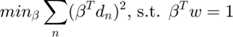
Let D be the data matrix which has the data points as its rows and the beta is the vector of the parameters that we are interested in. Hence D*beta becomes a vector with nth row being beta^T * dn
Using the definition of the norm, we can then see that:
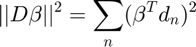
Thus, the optimization problem can be re-written in the matrix form as:
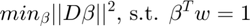
Now we can simplify the problem by performing SVD over the data matrix D. Doing so, we get:
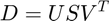
Substituting the SVD back into the matrix form of the optimization problem:
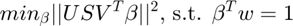
Since U is a transformation matrix, we can ignore it for the minimization problem:
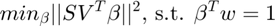
Let 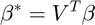, and 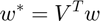
The minimization problem then becomes:
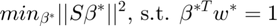
Now S is a diagonal matrix of shape 300 * 2. Hence it has the first two rows that is a matrix of two elements along the diagonals s1, s2 with the other two elements being 0. Also all the remaining rows of S are zeros. Let 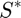 be the matrix obtained by taking the first two non-zero rows of S and 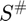 be the inverse of , then we have:
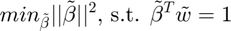
where,
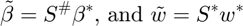
This can also be written in terms of the original beta and w:
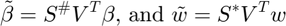
b)
Performing SVD on the original data:
[U, S, V] = svd(data);